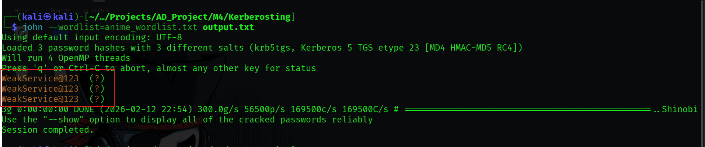

Kerberoasting
Hypothesis: We suspect that certain user accounts in the shinobi.local domain are configured as Service Accounts. These accounts likely have a Service Principal Name (SPN) associated with them.
Concept: Kerberoasting allows an attacker to request a Kerberos Ticket Granting Service (TGS) ticket for any user with an SPN. The Domain Controller returns the TGS encrypted with the service account's NTLM password hash. An attacker can capture this ticket and crack it offline to recover the plaintext password. This attack requires no administrative privileges, only a valid domain user account.
Objective: To verify the vulnerability exists, we checked the SPN configuration of our target service account svc_saiyan using the native Windows setspn utility.
Command:
setspn -L svc_saiyan
Findings: The output confirmed that svc_saiyan has registered SPNs (e.g., HOST/svc_saiyan), making it a valid target for Kerberoasting.
Objective: Perform the attack remotely from the Kali machine using the credentials of a compromised user (tanjiro_kamado21). We use NetExec (nxc) for its ability to automate the request and formatting of the hash.
Tool: NetExec (nxc)
Command:
nxc ldap 192.168.56.10 -u tanjiro_kamado21 -p 'Hinokami@456' --kerberoasting output.txtFindings:
svc_deathnote, svc_saiyan, and svc_sharingan.Objective: Perform the attack from a compromised Windows workstation (WRS01 or DC01) using tools available on the host.
Phase A: Native Enumeration
Tool: setspn (Built-in Windows Binary)
Command:
setspn -T shinobi.local -Q */*
Findings: This command queried the Global Catalog for all SPNs in the domain. It returned a comprehensive list of service accounts, confirming our targets svc_saiyan, svc_sharingan, and svc_deathnote without triggering antivirus alerts associated with offensive tools.
Phase B: Exploitation with Rubeus
Tool: Rubeus.exe
Command:
.\Rubeus.exe kerberoast /nowrap /outfile:hash.txtFindings:
hash.txt in a format compatible with Hashcat/John.Objective: Crack the encrypted TGS ticket to reveal the plaintext password of the service account.
Tool: John the Ripper
Command:
john --wordlist=anime_wordlist.txt output.txt
Findings:
krb5tgs (Kerberos 5 TGS etype 23).WeakService@123 (for svc_sharingan).
{kind=link}
{kind=link}
{kind=link}
{kind=link}
{kind=link}
{kind=link}